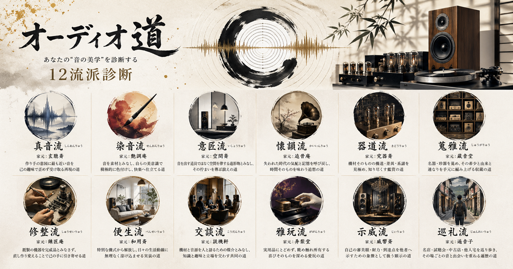
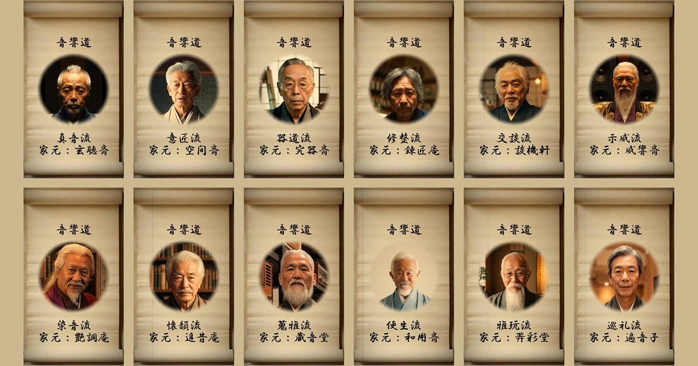

オーディオには様々な楽しみ方があります。
原音再生を極める人、音を自分好みに染める人、機材を愛でる人、名機を集める人、語らいの場として楽しむ人…。
本アプリはあなたのオーディオ観を十二の流派に分類し、自分でも気づいていなかった「音との向き合い方」を診断します。
※本アプリは回答後すぐに診断結果を表示し、診断結果閲覧のためにメールアドレス等の入力は一切不要です。

─ 流派への問道 ─
あなたがオーディオに求めるものを、五十の問いで測ります。
心の声に従い、正直にお答えください。
あまり深く考えず、直感でお答えいただくのがおすすめです。
音響道、十二大流派の家元本人による流派紹介